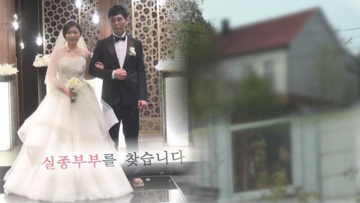

부산 수영구 광안리의 한 아파트에 살던 30대 동갑내기 신혼부부가 2016년 5월 27일 실종된 사건이다.
아내는 오후 10시 마트에서 물건을 산 것을, 남편은 다음 날인 28일 새벽 3시 퇴근해 집으로 돌아온 것을
마지막으로 행적이 묘연한 상황. 의아하게도 부부 모두 집으로 돌아오는 모습은 CCTV에 찍혔으나
나가는 장면은 찍히지 않았다.
부부의 차 역시 주차장에 그대로 있었으며, 집에는 외부인이 침입하거나 다툼의 흔적 등이 전혀 없었다.
또 현장 감식을 실시했으나 DNA 샘플 채취 및 혈액 반응에서도 특이한 점은 없었다.
후에 부부는 각자의 동료에게 '우울증을 앓던 아내가 약을 먹고 자살을 시도했다'는
내용의 문자메시지를 남겼다. 그러나 자택 인근 응급실이 있는 대학병원에는 아내가 내원한 기록이 없었다.
한편 남편이 결혼 후에도 만남을 이어갔던 전 여자친구가 용의자로 지목됐다.
지난 2017년 전 여자친구는 노르웨이에서 주요 용의자로 검거됐으나 증거 불충분으로
범죄인 인도 청구가 승인되지 않아 수사가 이뤄지지 않는 상황이다.
